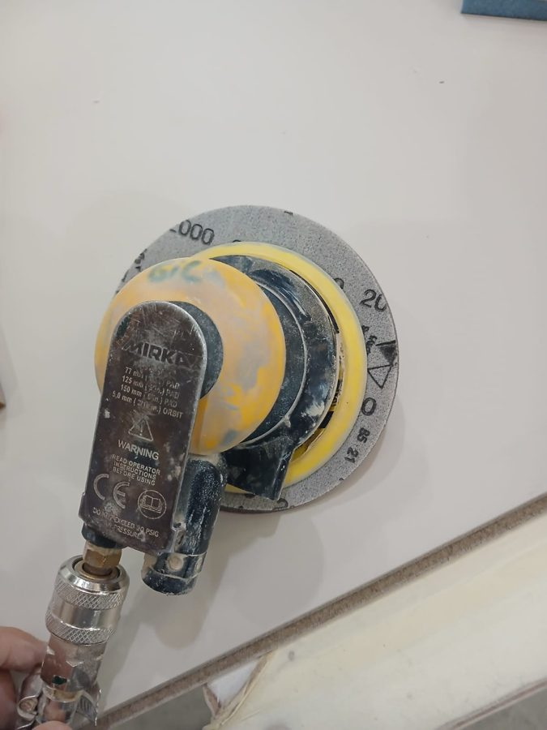
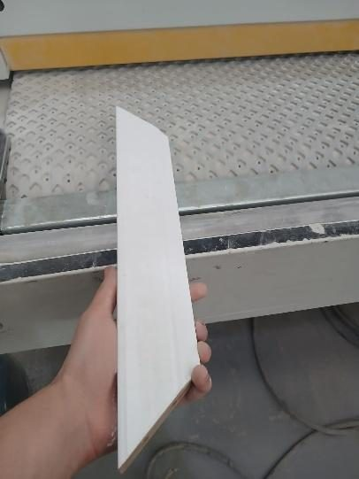
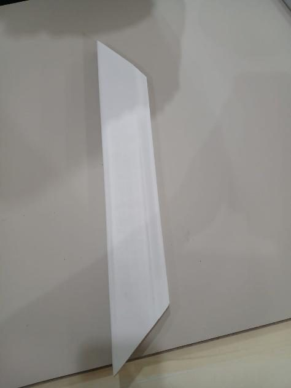
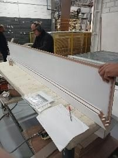
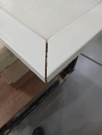
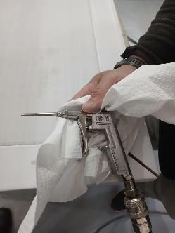
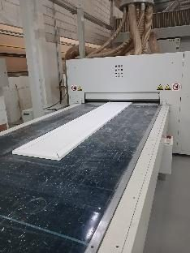
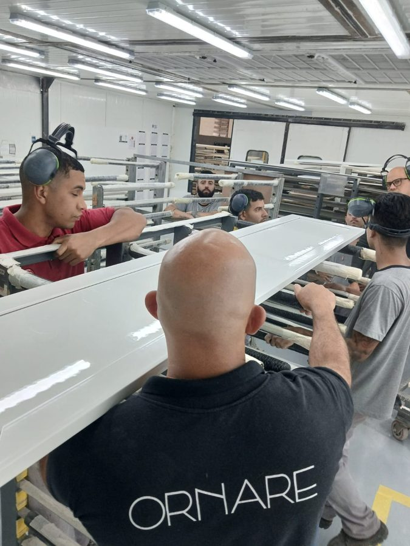
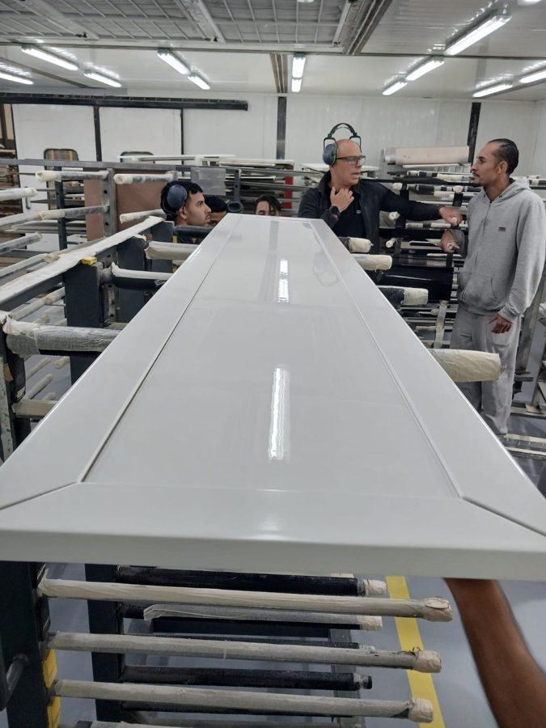
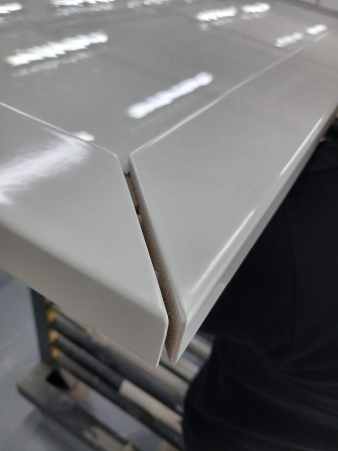

Pintura interna na IBotic
Teste da peça PARIS para validar preparação e pintura dentro da fábrica, mantendo o padrão Ornare: superfície uniforme e fresta de 5 mm preservada.
Parte 1 · Preparação da peça
Dois passos antes da tinta. Deslize as fotos para o lado.
1 · Lixação e pré-acabamento
- A Destefani remove os riscos da Usinagem e uniformiza a superfície.
- Lixa 2000 com a lixadeira rotopneumática nas bordas das molduras, para tirar farpas.
- Lixas 1200 e depois 400, nos dois lados.
- A peça chega com um "relevo" que fica insatisfatório na pintura. A causa raiz ainda precisa ser investigada.






2 · Montagem e limpeza
- Colocar as cavilhas nas laterais maiores.
- Montar painel, laterais maiores e menores, com vão de 5 mm entre as laterais. Assim a pintura não gera relevo nos vãos.
- Passar o bico de ar no lado que será pintado, para remover impurezas da superfície.




Parte 2 · Pintura na IBotic
Etapa principal, ainda em ajuste. Na 2ª amostra foi regulado o bico de saída de tinta.
InícioA máquina e os parâmetros
A IBotic é a máquina de pintura da fábrica. A peça entra pela esteira e é pintada dentro de uma câmara, por um cabeçote com bicos que se desloca sobre ela. Os parâmetros são ajustados no painel antes de cada pintura.


MeioPeça na esteira e pintura
A peça preparada é colocada na esteira. O vídeo mostra o cabeçote passando sobre a peça dentro da câmara de pintura.

FimRetirada e resultado
Após a pintura, a peça é retirada com cuidado da câmara e deixada secando até poder pintar a outra face.



